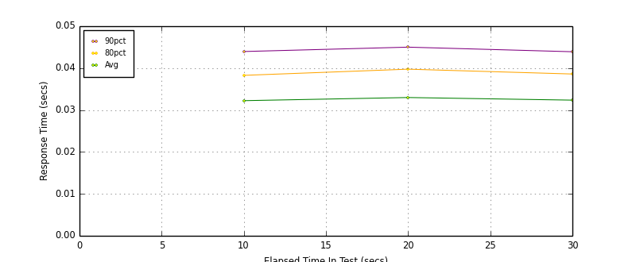
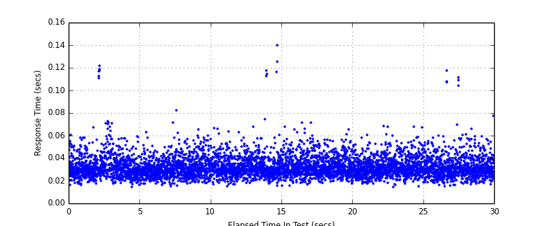
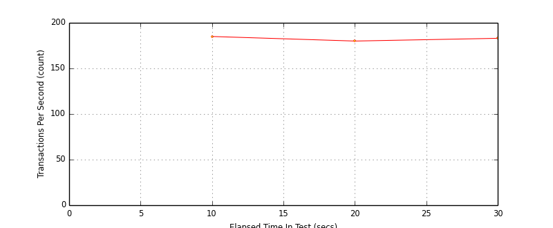
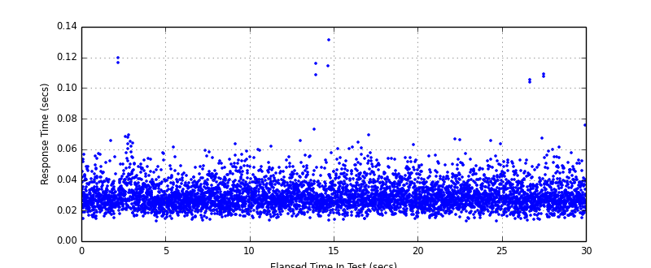

Performance Results Report
Summary
transactions: 5499
errors: 0
run time: 30 secs
rampup: 0 secs
test start: 2014-03-09 15:59:07
test finish: 2014-03-09 15:59:37
time-series interval: 10 secs
workload configuration:
| group name | threads | script name |
|---|
| user_group-1 | 3 | v_user.py |
| user_group-2 | 3 | v_user.py |
All Transactions
Transaction Response Summary (secs)
| count | min | avg | 80pct | 90pct | 95pct | max | stdev |
|---|
| 5499 | 0.015 | 0.033 | 0.039 | 0.044 | 0.050 | 0.140 | 0.010 |
Interval Details (secs)
| interval | count | rate | min | avg | 80pct | 90pct | 95pct | max | stdev |
|---|
| 1 | 1852 | 185.20 | 0.015 | 0.032 | 0.038 | 0.044 | 0.050 | 0.122 | 0.010 |
| 2 | 1805 | 180.50 | 0.015 | 0.033 | 0.040 | 0.045 | 0.050 | 0.140 | 0.010 |
| 3 | 1836 | 183.60 | 0.015 | 0.032 | 0.039 | 0.044 | 0.050 | 0.118 | 0.010 |
Graphs
Response Time: 10 sec time-series

Response Time: raw data (all points)

Throughput: 5 sec time-series

Custom Timer: Example_Timer
Timer Summary (secs)
| count | min | avg | 80pct | 90pct | 95pct | max | stdev |
|---|
| 5493 | 0.013 | 0.030 | 0.036 | 0.041 | 0.047 | 0.131 | 0.009 |
Interval Details (secs)
| interval | count | rate | min | avg | 80pct | 90pct | 95pct | max | stdev |
|---|
| 1 | 1852 | 185.20 | 0.013 | 0.030 | 0.035 | 0.041 | 0.047 | 0.120 | 0.009 |
| 2 | 1805 | 180.50 | 0.014 | 0.030 | 0.037 | 0.042 | 0.047 | 0.131 | 0.009 |
| 3 | 1836 | 183.60 | 0.013 | 0.030 | 0.036 | 0.041 | 0.046 | 0.109 | 0.009 |
Graphs
Response Time: 10 sec time-series

Response Time: raw data (all points)

Throughput: 10 sec time-series